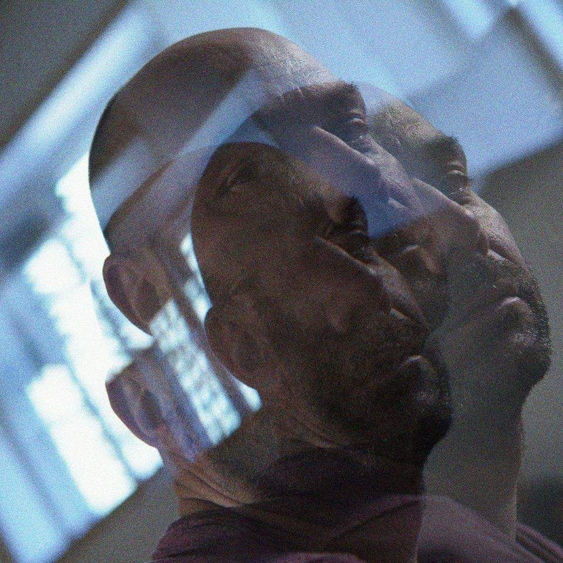

Sobre mí
Director de fotografía y operador de cámara con más de 15 años de experiencia en el sector audiovisual.
He trabajado en cine de ficción, publicidad, documentales y videoclips, buscando siempre que cada imagen tenga intención y narrativa propia.
Mi formación comienza en la Escuela de Cine Pedro Almodóvar, continúa con una especialización en cine documental en Buenos Aires y se completa con un máster en Dirección de Fotografía en Séptima Ars.
A lo largo de mi carrera he rodado largometrajes de ficción y documentales para plataformas y cadenas como Atresmedia, TVE, TV Canarias, TV Aragón y Movistar Plus.
En paralelo, fundé Moldavia Films, mi productora en Madrid, donde desarrollo proyectos combinando técnica, narrativa y estética visual.
Ganador del premio a Mejor Dirección de Fotografía en el Festival de Nueva York por la película Tristesse.
